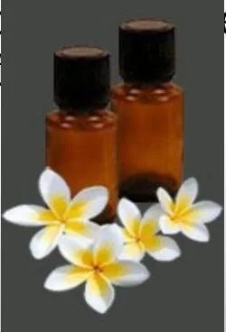

Módulo 04 · 25 minutos
La primera regla: nunca puro sobre la piel
Al terminar, vas a poder explicar por qué se diluye un aceite esencial y detectar situaciones que exigen detenerse antes de usarlo.
Una gota parece poca cosa
La persona inclina el frasco sobre la muñeca. «Es natural», piensa, «y es apenas una gota». Pero esa gota reúne sustancias que antes estaban distribuidas en flores, hojas, madera o cáscaras. Pequeño volumen no significa baja intensidad.
La primera destreza cosmética no es mezclar: es saber cuándo frenar.
Concentrado no significa listo para usar
La regla inicial es clara: un aceite esencial no debe asumirse apto para aplicarse puro sobre la piel. Antes necesita una en una , como un aceite vegetal adecuado.
El agua no resuelve por sí sola el problema. Como el aceite esencial es insoluble, unas gotas pueden quedar concentradas aunque el recipiente se agite. Verlas dispersarse no equivale a obtener una dilución uniforme.

Las proporciones concretas dependen de la preparación, el área de aplicación y la persona. Se estudiarán más adelante. En este punto importa incorporar el criterio anterior a cualquier fórmula: primero se define un vehículo compatible y una concentración; después se mide.
Señales para detenerse
Piel
No aplicar puro. Ante sensibilidad conocida o duda, no improvisar.
Ojos y mucosas
Evitar el contacto. No frotar ni acercar el frasco abierto.
Ingestión
No ingerir como práctica doméstica. Uso aromático y uso alimentario no son equivalentes.
Embarazo e infancia
Requieren especial prudencia y criterio profesional. Mantener los frascos fuera del alcance de niñas y niños.
Fuego y calor
Muchos aceites son inflamables. Mantenerlos alejados de llamas, superficies calientes y fuentes de ignición.
Reacción
Enrojecimiento, picazón o irritación son motivos para suspender el uso. «Natural» no significa «incapaz de causar reacción».
Una fragancia sintética tampoco debe tratarse como equivalente a un aceite esencial ni suponerse apta para uso cutáneo. La indicación de uso, la composición y el rotulado importan más que una palabra atractiva en el frente del envase.
Cuando el sol cambia la regla
La obliga a mirar el reloj y el contexto. Algunos aceites, especialmente ciertos cítricos, pueden aumentar la sensibilidad de la piel al sol. Entre los señalados aparecen bergamota, limón, naranja amarga, pomelo, mandarina y lima.
Una reacción fototóxica puede manifestarse con enrojecimiento, ardor, inflamación o manchas. Por eso una preparación para la piel no se evalúa solo por su aroma: también por el aceite elegido, su concentración y la exposición solar prevista.
Antes de abrir, leé
- nombre común y nombre botánico;
- parte de la planta;
- indicaciones y advertencias de uso;
- lote o dato de trazabilidad;
- envase bien cerrado y en buenas condiciones.
Si esa información falta, la decisión responsable no es adivinar: es detenerse.
Actividad · Tres escenas, tres decisiones
- Alguien agrega limón a un aceite corporal y piensa exponerse al sol. Decisión: detenerse y revisar el riesgo de fototoxicidad.
- Alguien añade lavanda a un vaso de agua y lo llama «diluido». Decisión: reconocer que el agua no forma una mezcla uniforme por sí sola.
- Un frasco sin nombre botánico ni advertencias aparece abierto junto a una vela. Decisión: cerrarlo, alejarlo del calor y no usar un producto sin identificación suficiente.
La seguridad no es una lista ajena al proceso creativo. Es el criterio que permite que una idea cosmética siga siendo una buena idea cuando sale del papel.
La gota recuperó su historia
El frasco ya no es un objeto aislado. Contiene una mezcla volátil, fabricada por una planta con una función, alojada en una parte concreta y concentrada hasta exigir cuidado. Ahora podés elegir un aceite y reconstruir ese camino con tus propias palabras.
Guardá esta estación
Cuando puedas explicar la idea central con tus propias palabras, marcá el módulo como completado.